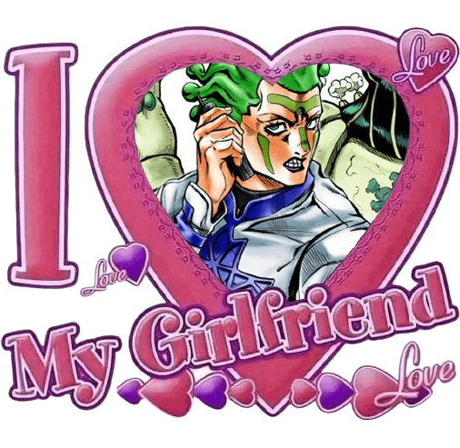
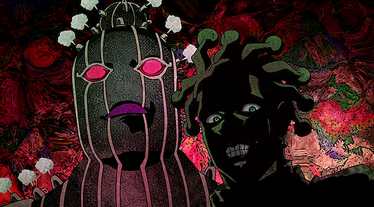
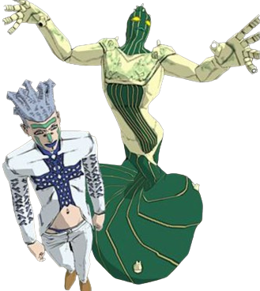
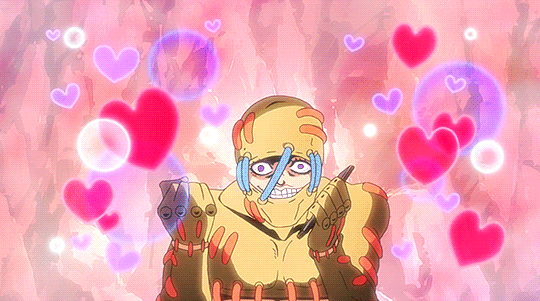

I used to use this shrine as a sort of informational / infodump page for these two - but have since decided to use it more as a page where I can gather my thoughts, personal headcanons, rambles and etc all in one place. If you are interested in their wikis, I've linked them in the images below :).
You may also notice Cioccolata appears on here more often - I'm not going to lie as much as I love them as a unit (they are one of the only 'ships' I care about anymore) Cioccolata does lean more towards being my favorite of the two. He hits so many character Achilles heels that I have.. An evil sadistic doctor is like my fictional bread and butter (I blame Medic TF2 - a formative middle school blorbo.. ).
  
Anyways.. I know these are only minor villains with limited screen time - we really only see a glimpse into what could be, but what their brief appearance implies and insinuates is, to me, more than enough to chew on.

test test test test test test test test test test test test test test test test test test test test test test test test test test test test test test test test test test test test test test test test test test test test test test test test test test test test test test test test test test test test test test test test test test test test test test test test test test test test test test test test test test test test test test test test test test test test test test test test test test test test test test test test test test test test test test test test test test test test test test test test test test test test test test test test test test test test test test test test test test